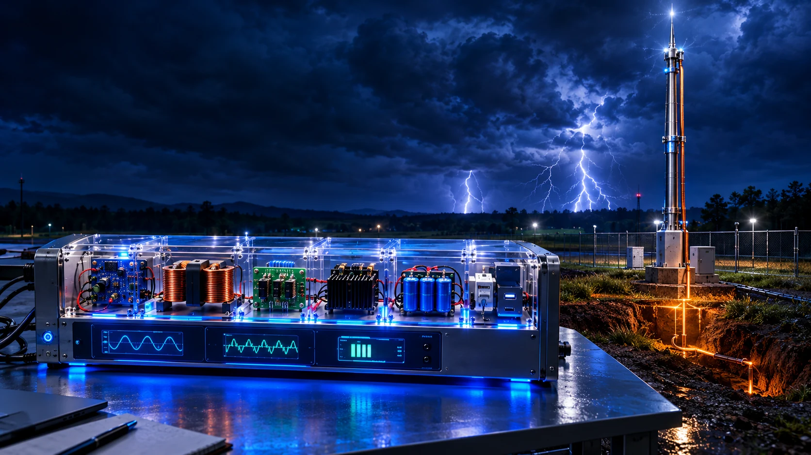
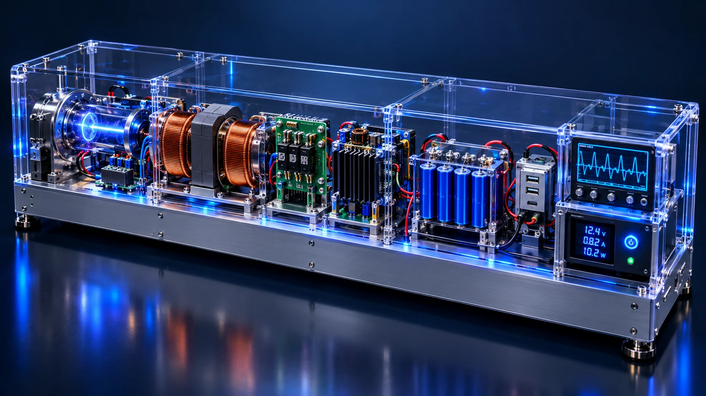
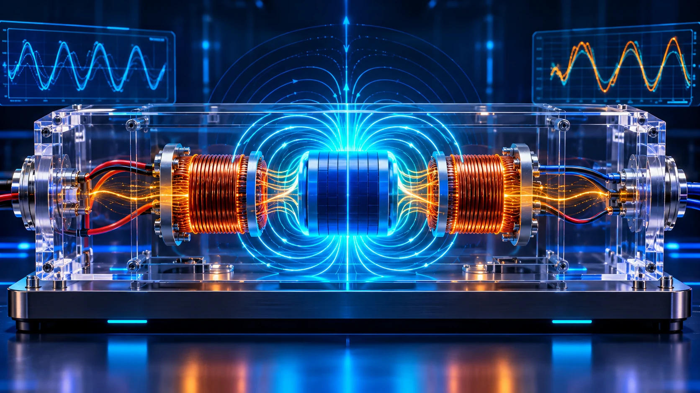
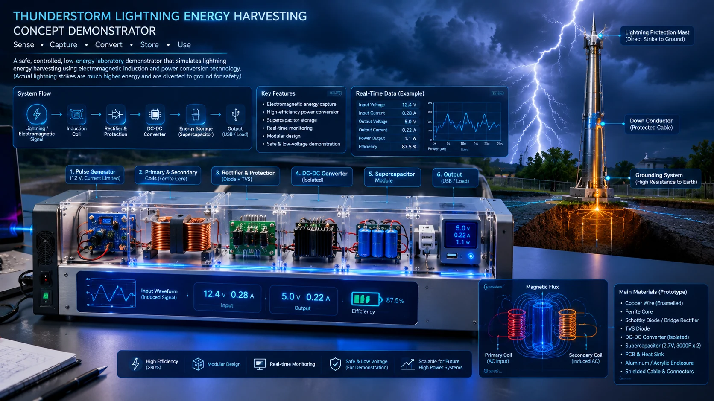

Sense → Induce → Rectify → Convert → Store → Use

Explore how a controlled low-voltage impulse can be represented as induction, protected conversion, temporary storage and load delivery. Each moving pulse below is synthetic, not a detected atmospheric strike.
Follow the pulse through each conceptual subsystem.

Drag the 3D model to rotate it. The device is a digital-twin concept, not a construction drawing, tested prototype, or safe connection guide.
Inputs are limited to a low-voltage conceptual test envelope. The calculator does not estimate accessible energy in an atmospheric lightning strike.
This control plane operates only the local mathematical model and visual animation. It cannot arm, switch, trigger, charge, discharge or command any physical lightning/high-voltage equipment. Keep certified lightning protection and experimental low-voltage electronics electrically separate.
The embedded viewer is JMA's public South Asia RGB satellite imagery page (70°E–100°E, 0°N–30°N). It provides cloud-top / convective context, not lightning-strike detection, direct spacecraft telemetry, or a command link. JMA's full operational distribution has separate access arrangements.

COUPLING FACTOR 0.75Field loops are conceptual visuals. Their shape is not a finite-element electromagnetic solution or measured magnetic flux.
Pin = V × I12.4 × 0.28 = 3.472 WEpulse = V × I × Δt0.1736 Jηtotal = ηind × ηrect × ηdc60.72%Ecaptured = Epulse × ηtotal0.1054 JEcap = ½ C V²1.250 J maxtload ≈ Estored / (VLIL)0.227 sThe model-based precipitation advisory updates when the public weather API responds. CAPE is an atmospheric-instability metric, not a lightning observation. Direct lightning-strike detection is NOT CONNECTED.
Open-Meteo forecast/model values are not direct sensor readings. Precipitation probability is not thunderstorm probability; CAPE is not a strike count. Direct lightning-strike feed: NOT CONNECTED. NOAA GOES-R GLM coverage does not provide a Bangladesh regional live feed.
Open-Meteo API documentation ↗No pulse has been run yet. Model alerts update as weather or storage states change.
Alerts remain local to this browser tab. They do not send SMS, push notifications, emergency dispatch or equipment commands.

Reference visual supplied for this upgrade. The displayed device ratings in the image are illustrative, not verified test measurements.